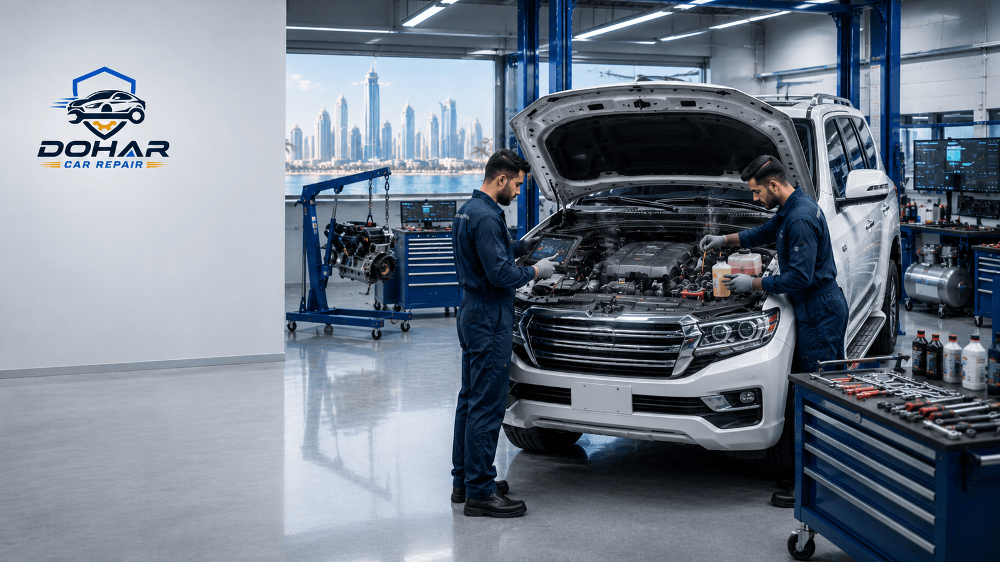
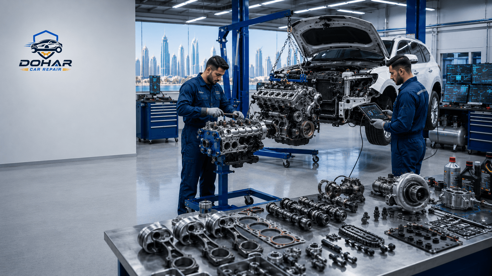

Car overheating in Doha is one of the most serious problems a driver can face. Qatar’s extreme ambient temperatures, long idle times in traffic, and dusty radiator stacks push cooling systems harder than in milder climates. A rising temperature gauge is not a suggestion — it is a warning that the engine can suffer expensive damage within minutes. This guide explains why overheating is common here, the warning signs to watch for, safe actions to take on the roadside, and when to seek professional help. For repair work after diagnosis, see our engine repair service in Doha. When electronic fans, sensors, or stored fault codes are involved, computer diagnostics in Doha helps pinpoint the fault accurately.

Why Overheating Happens More Often in Qatar
Cooling systems reject engine heat into the surrounding air. When that air is already extremely hot, the radiator has less “temperature headroom” to work with. Add AC condenser heat in front of the radiator, sand restricting fins, and slow traffic with little ram airflow, and borderline components fail in public view — often on the Corniche, C-Ring, or Industrial Area approaches.
Summer heat also ages rubber hoses, water-pump seals, and plastic coolant reservoirs. Small leaks become steam clouds under load. Thermostats that stick closed trap heat. Weak electric fans that once managed winter traffic cannot keep up when AC is on at midday. Understanding these local stresses helps you treat early symptoms seriously instead of hoping the gauge settles on its own.
Critical Safety Warning
Never open a hot radiator cap or pressurized coolant reservoir. Scalding steam and fluid can cause severe burns. Wait until the engine is fully cool before any coolant inspection. If you see steam, stay clear of the front grille area and call for help.
Warning Signs of Car Overheating
Do not wait for a dramatic steam plume. These earlier signals matter:
- Temperature gauge climbing toward the red zone or a digital overheating warning
- Sweet coolant smell inside or outside the cabin
- Heater blowing unusually hot even on mild settings, or sudden loss of cabin heat if coolant is very low
- Cooling fans running loudly and constantly at idle after short trips
- Low coolant level that keeps returning after top-ups (only check when cold)
- Dashboard coolant or engine temperature lights
- Loss of power, knocking, or limp mode as the ECU protects a hot engine
- Visible steam or bubbles from the grille or under the bonnet
Common Causes of Overheating in Doha
Low Coolant or External Leaks
Hoses, radiator tanks, water-pump weep holes, and heater cores can leak. Heat accelerates hose cracking. Drivers who only “top up” without finding the leak often overheat again on the next long queue.
Failed or Weak Cooling Fans
Electric fans are essential in Doha traffic. A bad motor, relay, fuse, or control signal leaves the car fine on the highway and critical at idle — especially with AC on.
Clogged Radiator or Condenser Stack
Sand, insects, and debris reduce heat transfer. A visually “dirty” front end can be enough to tip a stressed system into overheating during August afternoons.
Stuck Thermostat
If the thermostat stays closed, coolant cannot circulate through the radiator. Temperature rises quickly even on short drives.
Water Pump Wear
A failing pump cannot circulate coolant effectively. Whining noises, coolant leaks at the pump, or overheating under load are common clues.
Head Gasket or Internal Engine Issues
Persistent overheating, white exhaust smoke, milky oil, or unexplained coolant loss may indicate internal failure. These cases need careful diagnosis — not repeated coolant top-ups. Our engine repair team in Doha handles these inspections when cooling-system basics check out but symptoms continue.
Sensor or Fan Control Faults
Incorrect temperature readings or fans that never command on can be electronic. That is where computer diagnostics confirms whether the problem is a sensor, wiring, or control module rather than a mechanical radiator fault.

What to Do Safely If Your Car Overheats
Follow these steps. The goal is to protect people first, then the engine:
- Reduce load immediately
Turn the AC off. If safe, set the heater to full hot with the blower high — this can transfer some heat away from the engine into the cabin while you look for a place to stop.
- Pull over safely
Hazard lights on, move out of live lanes as soon as you can. Continuing to drive “just a little further” while the needle is high is how engines get destroyed.
- Shut the engine off
Once parked safely, switch off. Do not rev the engine hoping to “cool it with airflow” while stationary.
- Stay clear of steam
Do not lean over the engine bay. Do not remove the radiator cap. Wait a long cooling period before any cold-engine coolant check.
- Arrange professional help
If the car overheated, it needs inspection even if the gauge later returns to normal. Call Dohar Car Repair at 0097472223959 or use WhatsApp for guidance and booking.
Do Not Attempt Hot Radiator DIY
Opening a pressurized cooling system while hot is dangerous and can cause severe burns. Coolant work, pressure testing, and thermostat or pump replacement belong to trained technicians with the right tools and safety process.
How Oil Condition Relates to Engine Heat
Coolant carries most heat away, but engine oil also lubricates and helps manage internal temperatures. Old, low, or wrong-viscosity oil increases friction — undesirable in Qatar heat and stop-go traffic. Overheating and neglected oil service often appear together on high-mileage cars. Keep intervals honest for local conditions; our guide to car oil change in Doha explains why heat and short trips demand reliable oil maintenance alongside cooling-system care.
"In Doha, overheating is rarely a one-day mystery. Fans, coolant level, and radiator airflow usually tell the story — if you stop early enough to listen."
Prevention Tips for Doha Drivers
- Check coolant level only on a cold engine and top up with the correct type
- Inspect hoses for cracks, swelling, or seepage before summer
- Keep the front grille and condenser area free of heavy debris
- Service the cooling system before peak heat if the car is due
- Do not ignore a gauge that runs higher than your normal baseline
- Maintain oil changes on schedule for Qatar driving — see oil change guidance
- After any overheating event, book a workshop inspection before long highway trips
When to Book Diagnosis and Engine Repair
Book promptly if temperature climbed into the warning zone, if you lost coolant, if fans behave oddly, or if the car entered limp mode. Technicians will pressure-test the cooling system, check thermostat and pump operation, verify fan command, and inspect for head-gasket indicators when needed. Electronic issues benefit from scan-tool verification through computer diagnostics. Structural or mechanical engine damage after severe overheating may require full engine repair.
Overheating? Get Checked Today
Do not risk another drive in the red. Contact Dohar Car Repair on Street 27, Doha — call 0097472223959 or WhatsApp for cooling-system diagnosis, engine repair, and computer diagnostics support.
FAQ: Car Overheating in Doha
What should I do immediately if my car overheats in Doha traffic?
Turn off the AC, switch the heater to hot with the fan on high to help pull heat from the engine, pull over safely as soon as you can, and shut the engine off. Do not open a hot radiator cap. Call for assistance if steam is visible or the temperature stays in the red.
Can low oil cause overheating?
Low or degraded oil increases friction heat and can contribute to high temperatures, especially under Qatar load. Cooling-system faults remain the most common cause, but oil condition still matters. Keep up with scheduled oil service.
Is it safe to keep driving with the temperature gauge slightly high?
No. Driving while hot risks warped heads, blown head gaskets, and seized engines. Stop safely, allow cooling time, and arrange diagnosis before another long trip in Doha heat.
Why does my car overheat only with the AC on?
AC adds load and requires strong condenser and radiator airflow. A weak cooling fan, clogged radiator stack, or borderline coolant system often fails first when AC is running in traffic.
When should I book engine repair or diagnostics?
Book as soon as you see rising temperature, coolant loss, repeated fan running, or overheating warning lights. Dohar Car Repair can inspect cooling components and run computer diagnostics when sensors or fans need electronic verification.
Conclusion: Treat Heat Warnings as Emergencies
Car overheating in Doha is driven by climate, traffic, and cooling-system wear — but serious engine damage is preventable if you stop early and repair the cause. Know the signs, follow safe roadside steps, and never open a hot cooling system. When you need expert help, Dohar Car Repair is ready on Street 27.
Call +974 7222 3959, WhatsApp our team, or visit the contact page to book. Learn more about engine repair and computer diagnostics for a complete path from warning light to lasting fix.